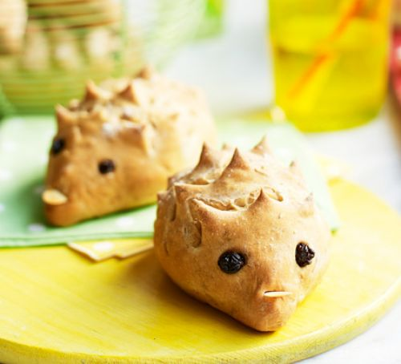
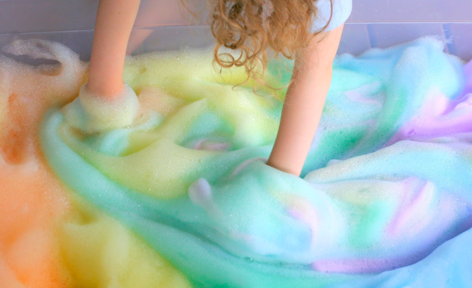
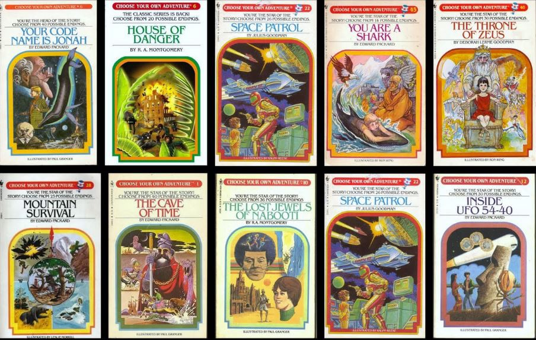

As a school community, our mission at San Bruno General Elementary School is to work together to provide a welcoming and helpful environment where every student is working towards realizing his/her highest goals as a life-long learner and a respectful and responsible citizen.
There’s something delightful about being able to bake your own bread, and these friendly hedgehog rolls make a wonderful cooking activity for kids.
All you need is a little soap, water, a mixer and some food coloring to create this tactile activity from Fun at Home With Kids. Change it up by picking up some unusual food coloring hues at a local craft store.
Write a collaborative class story in the style of “Choose Your Own Adventure.” Start a story and bring that story to a fork in the road. Allow students to write the optional paths that the story can take. Once you have a couple of student-written options, continue the story in the same way. If you have older students, it’s fun to put them in small groups. Tell the groups they need to have at least three branches, and when everyone is done, trade stories and read each other’s adventures.
